Dalam aplikasi mobile, tampilan layar selalu bergantung pada data yang bisa berubah selama aplikasi berjalan, misalnya jumlah porsi pada sebuah resep atau daftar resep yang ditandai favorit. Data seperti ini disebut state, dan hubungannya dengan tampilan dirumuskan sebagai UI = f(state). Artinya, kalau state berubah, tampilan harus ikut berubah.
Masalahnya, tidak semua state punya kebutuhan yang sama. Jumlah porsi hanya dipakai oleh satu halaman (halaman detail), sedangkan daftar favorit dibutuhkan oleh banyak tempat sekaligus: daftar resep, badge di AppBar, halaman detail, dan halaman Favorit. Pertanyaan yang dijawab modul ini adalah di mana masing-masing state sebaiknya disimpan.
Pada praktikum ini saya membangun aplikasi ResepKu dan mencoba dua pendekatan.
Pertama, setState() dengan StatefulWidget untuk state lokal
(ephemeral) pada fitur jumlah porsi. Kedua, Provider
(ChangeNotifier dan MultiProvider) untuk state global pada fitur
favorit. Di tengah praktikum ada eksperimen yang memperlihatkan langsung kenapa state lokal
tidak cukup untuk fitur favorit. Project ResepKu ini juga akan dilanjutkan sampai Modul 10,
jadi struktur foldernya dirapikan sejak awal.
StatefulWidget dan setState() pada fitur jumlah porsi di halaman detail.provider (ChangeNotifier dan MultiProvider) pada fitur favorit.context.watch, context.read, dan Consumer di beberapa halaman.flutter pub add
Project dibuat dengan flutter create resepku, lalu folder resepku dibuka di VS Code.
Di dalam lib/ saya membuat lima folder, yaitu models, data,
providers, pages, dan widgets, supaya kode terpisah sesuai fungsinya.
File test/widget_test.dart bawaan template juga dihapus karena merujuk class
MyApp yang sudah tidak ada dan modul ini belum memakai testing.
File lib/models/recipe.dart berisi class Recipe yang merepresentasikan satu resep,
dengan field id, name, cuisine, difficulty, waktu persiapan
dan memasak, servings, kalori per porsi, rating, image, dan
ingredients. Ada juga getter totalTimeMinutes yang menjumlahkan waktu persiapan dan
waktu memasak. Getter dipanggil tanpa tanda kurung, seperti field yang nilainya dihitung. Field
image belum dipakai sekarang dan baru dipakai di Modul 7. Langkah ini belum menghasilkan tampilan,
hasilnya baru terlihat pada Langkah A.4.
File lib/data/dummy_recipes.dart berisi daftar dummyRecipes dengan enam resep yang
sama dengan enam resep pertama di dummyjson.com/recipes. Dengan begitu, di Modul 8 cukup sumber
datanya yang diganti ke API dan UI tidak perlu diubah. Sama seperti A.2, hasilnya terlihat pada Langkah A.4.
Pada langkah ini dibuat tiga hal: identity_footer.dart (footer berisi NIM dan nama yang tampil di
bawah setiap halaman), main.dart versi awal, serta home_page.dart dan
recipe_tile.dart versi awal. Nilai kNim dan kNama diganti dengan data
saya sendiri. Footer dipasang sekali lewat parameter builder pada MaterialApp,
sehingga muncul di semua route tanpa perlu ditambahkan ke tiap Scaffold. Hasilnya, halaman Home
menampilkan enam resep dalam bentuk ListView, dan di bagian bawahnya terlihat footer NIM dan
nama.
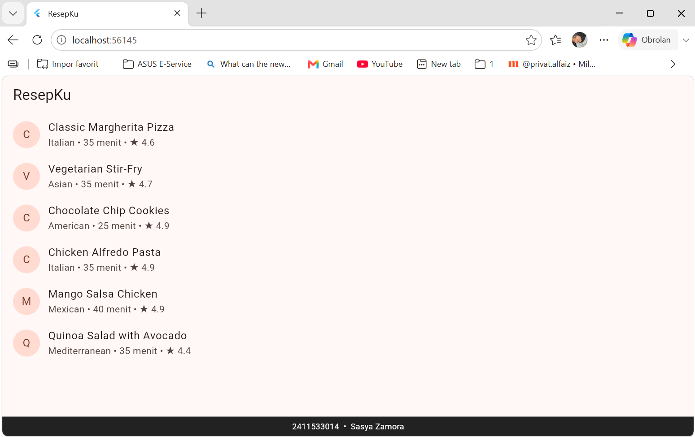
Halaman detail memakai StatefulWidget karena jumlah porsi berubah saat tombol + atau − ditekan.
Ada tiga hal yang diperhatikan. Pertama, nilai awal _servings diisi di initState()
dari widget.recipe.servings. Kedua, data milik widget diakses lewat widget.recipe.
Ketiga, setiap perubahan data dibungkus setState() supaya Flutter menjalankan ulang
build(). Total kalori dihitung dari caloriesPerServing * _servings. Tombol −
dibatasi supaya porsi tidak kurang dari 1.
onPressed: _servings > 1 ? _removeServing : null,. Jika
onPressed bernilai null, IconButton otomatis tampil
nonaktif. Selain itu, method _removeServing() juga punya pengecekan
if (_servings > 1) sebagai pengaman kedua.
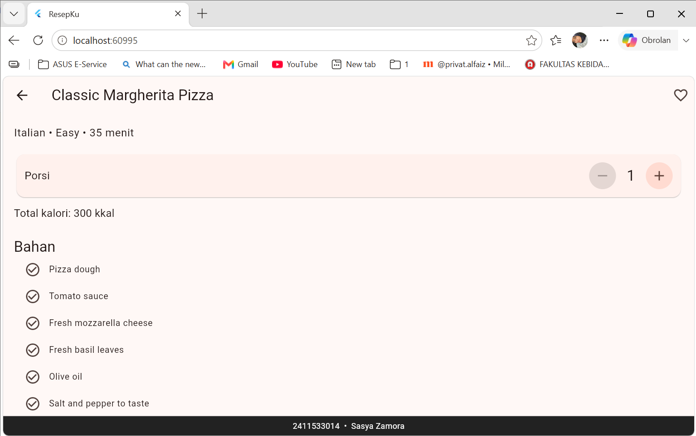
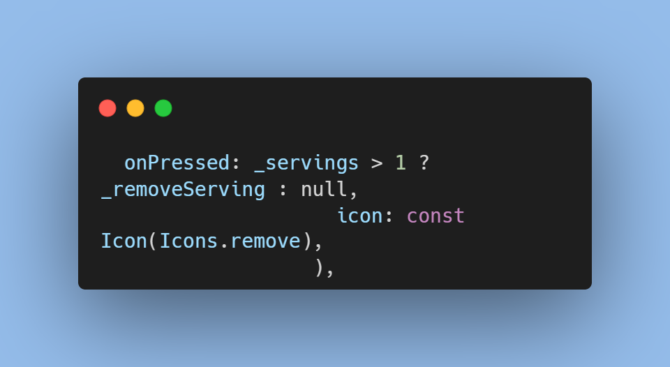
Sebelum memakai Provider, saya mencoba cara paling sederhana dulu: recipe_tile.dart diganti
dengan versi eksperimen yang berupa StatefulWidget, dan setiap tile menyimpan status favoritnya
sendiri lewat field _isFavorite dan setState(). Setelah hot reload, muncul ikon hati
di sisi kanan tiap resep.
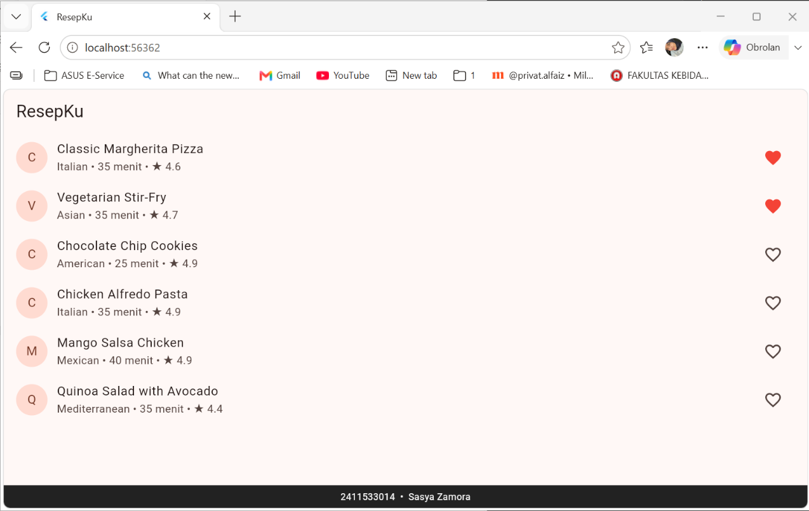
Ikon hati saya tap pada dua resep, lalu tiga pertanyaan modul dijawab sebagai berikut.
_isFavorite adalah state lokal milik tile
yang di-tap, dan setState() membuat tile itu saja dibangun ulang dengan
nilai baru.
_isFavorite berada di class _RecipeTileState,
tepatnya di dalam masing-masing tile, dan bersifat private. HomePage adalah
StatelessWidget yang berada di atas tile, dan ia tidak punya jalan untuk
membaca state milik widget anaknya. Aliran data di Flutter mengalir dari atas ke bawah,
bukan sebaliknya.
DetailPage hanya menerima objek Recipe lewat constructor,
sedangkan status favorit tersimpan di tile dan tidak ikut dikirim. Kalau status favorit
diubah dari halaman detail pun, tile di Home tidak akan mengetahuinya.
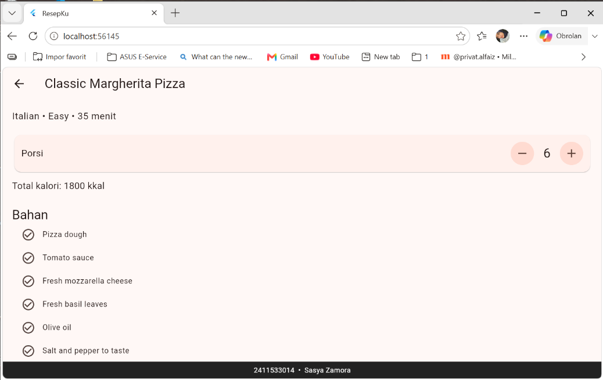
Package dipasang dengan flutter pub add provider, yang menambahkannya ke
pubspec.yaml sekaligus mengunduhnya. Setelah itu dibuat
lib/providers/favorite_provider.dart berisi class
FavoriteProvider extends ChangeNotifier. Daftar _items dibuat private dan hanya bisa
dibaca dari luar lewat getter items yang unmodifiable, sehingga setiap perubahan wajib
lewat toggle() atau clear(), dan notifyListeners() tidak terlewat.
Resep dibandingkan berdasarkan id, bukan objeknya, karena di Modul 8 objek
Recipe akan dibuat ulang dari JSON.
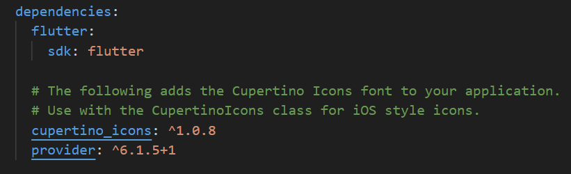
Isi main.dart diganti: ChangeNotifierProvider dipasang di dalam
MultiProvider yang membungkus ResepKuApp, tepat di atas MaterialApp,
supaya semua halaman (route) bisa mengakses FavoriteProvider. Import dan baris
builder untuk footer identitas tetap dipertahankan. Setelah mengubah main.dart, saya
melakukan hot restart, bukan hot reload, karena hot reload tidak menjalankan ulang
main() sehingga provider belum terpasang dan muncul ProviderNotFoundException.
Langkah ini tidak mengubah tampilan, hasilnya terlihat di Langkah C.3.
RecipeTile dikembalikan menjadi StatelessWidget. Status favorit tidak lagi disimpan
di tile, tetapi dibaca dengan context.watch<FavoriteProvider>().isFavorite(recipe) di dalam
build(), sehingga tile ikut rebuild ketika daftar favorit berubah. Pada callback
onPressed dipakai context.read<FavoriteProvider>().toggle(recipe), karena di
callback cukup memanggil method tanpa perlu mendengarkan perubahan. Aturan utamanya:
watch di dalam build(), read di dalam callback.
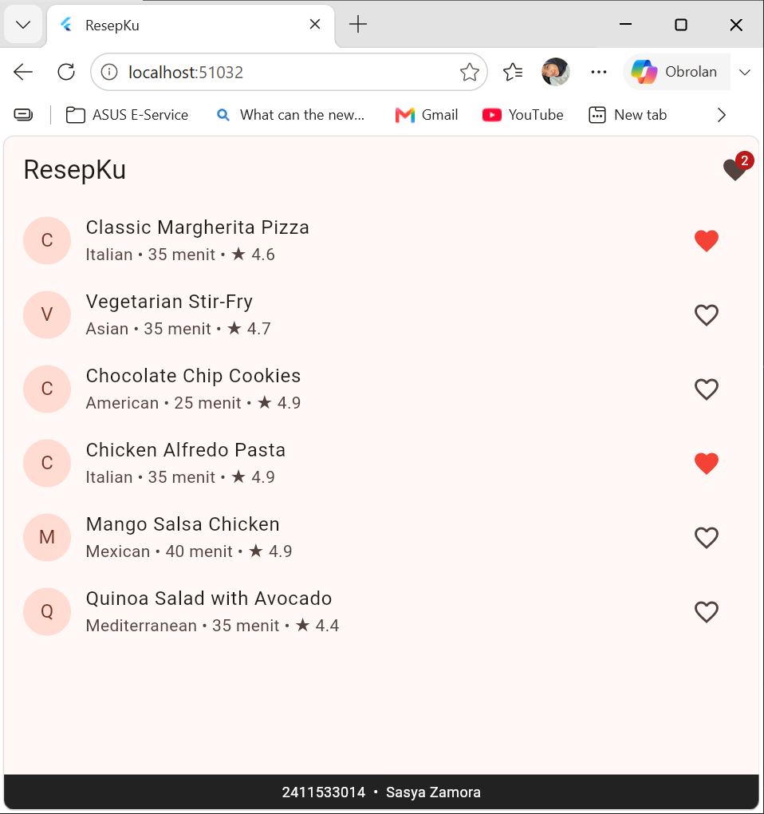
Di detail_page.dart ditambahkan import provider dan favorite_provider,
baris final isFavorite = context.watch<FavoriteProvider>().isFavorite(recipe); di
build(), serta parameter actions pada AppBar yang berisi
IconButton hati. Sekarang halaman ini memakai dua jenis state sekaligus:
_servings sebagai state lokal (setState) dan status favorit sebagai state global
(Provider). Kombinasi seperti ini wajar dalam aplikasi nyata. Ikon hati di AppBar halaman detail Margherita
terisi karena resep itu sudah ada di daftar favorit, yang artinya halaman detail sekarang bisa mengetahui
status favorit.
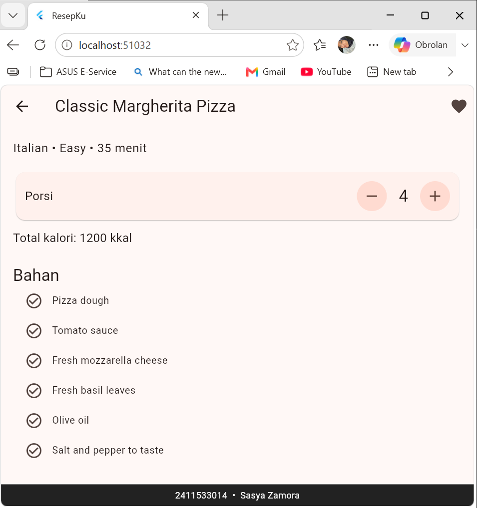
favorite_page.dart dibuat dengan Consumer<FavoriteProvider>, yaitu bentuk
widget dari context.watch. Fungsi builder-nya dijalankan ulang setiap kali
notifyListeners() dipanggil. Jika count == 0 ditampilkan pesan "Belum ada resep
favorit", dan jika tidak, daftar resep favorit ditampilkan dengan tombol hapus di tiap barisnya. Pada langkah
ini halaman belum bisa dibuka dari mana pun, jadi tampilannya baru terlihat setelah Langkah C.6.
favorite_badge_button.dart dibuat sebagai widget terpisah supaya hanya bagian ini yang rebuild
ketika jumlah favorit berubah. Widget memakai Badge dari Material 3 yang menampilkan angka di
atas ikon hati (isLabelVisible: count > 0), dan jika ditekan akan membuka
FavoritePage. Widget ini kemudian dipasang di actions AppBar pada
home_page.dart.
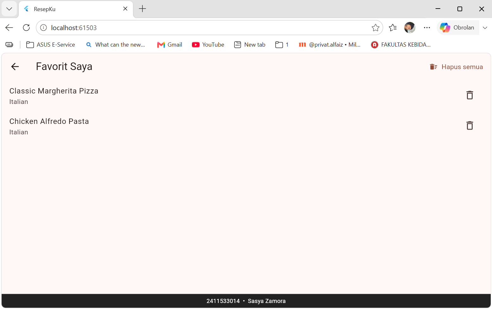
Setelah hot restart, enam skenario berikut diuji.
| No | Skenario | Hasil yang diharapkan | Sesuai? | Bukti |
|---|---|---|---|---|
| 1 | Tap ikon hati pada Margherita dan Alfredo di Home | Ikon berwarna merah, badge menunjukkan angka 2 | ✔ | Gambar 12 |
| 2 | Buka detail Margherita | Ikon hati di AppBar terisi | ✔ | Gambar 11 |
| 3 | Di halaman detail, tap ikon hati, lalu kembali ke Home | Ikon Margherita kosong, badge menunjukkan angka 1 | ✔ | Gambar 14 |
| 4 | Tap badge di AppBar | Halaman Favorit hanya berisi Alfredo | ✔ | Gambar 15 |
| 5 | Hapus Alfredo dari halaman Favorit, lalu kembali | Muncul pesan "Belum ada resep favorit", badge hilang | ✔ | Gambar 16 dan 17 |
| 6 | Ubah porsi menjadi 2, kembali ke Home, lalu buka lagi resep yang sama | Porsi kembali ke nilai awal, karena state lokal ikut dibuang ketika halaman ditutup | ✔ | Gambar 18 dan 19 |
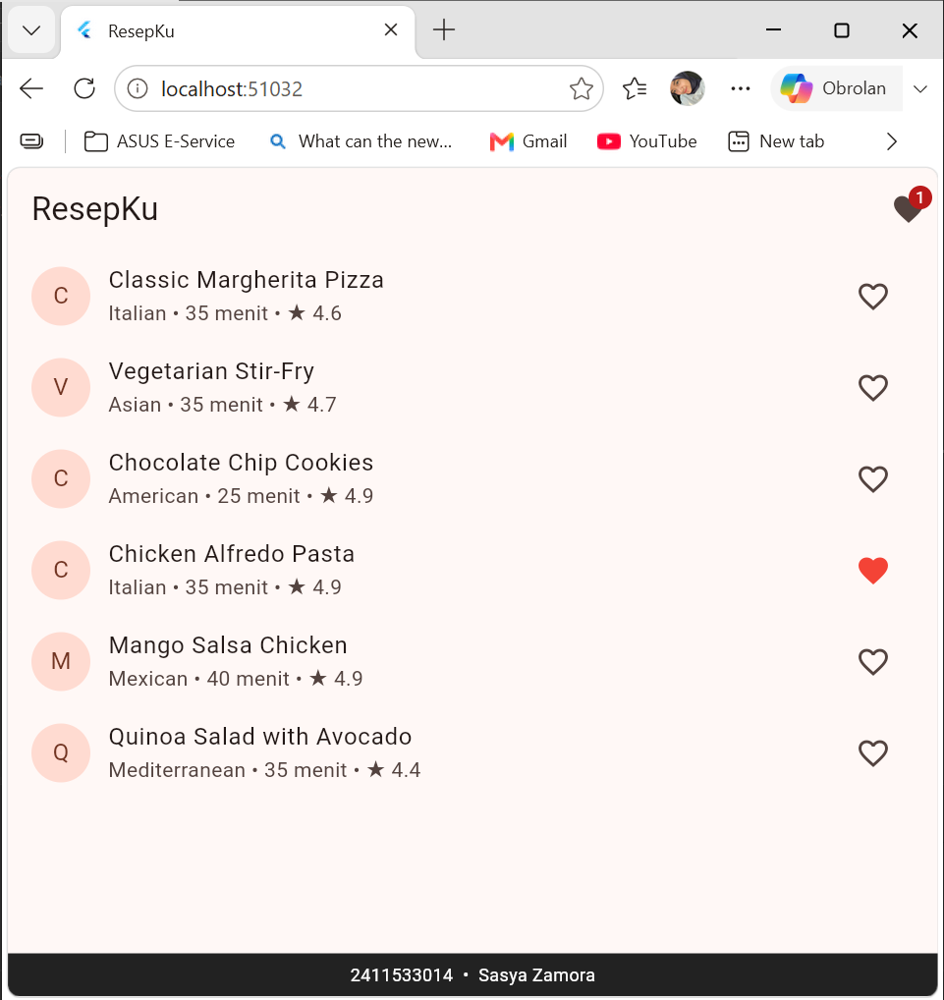
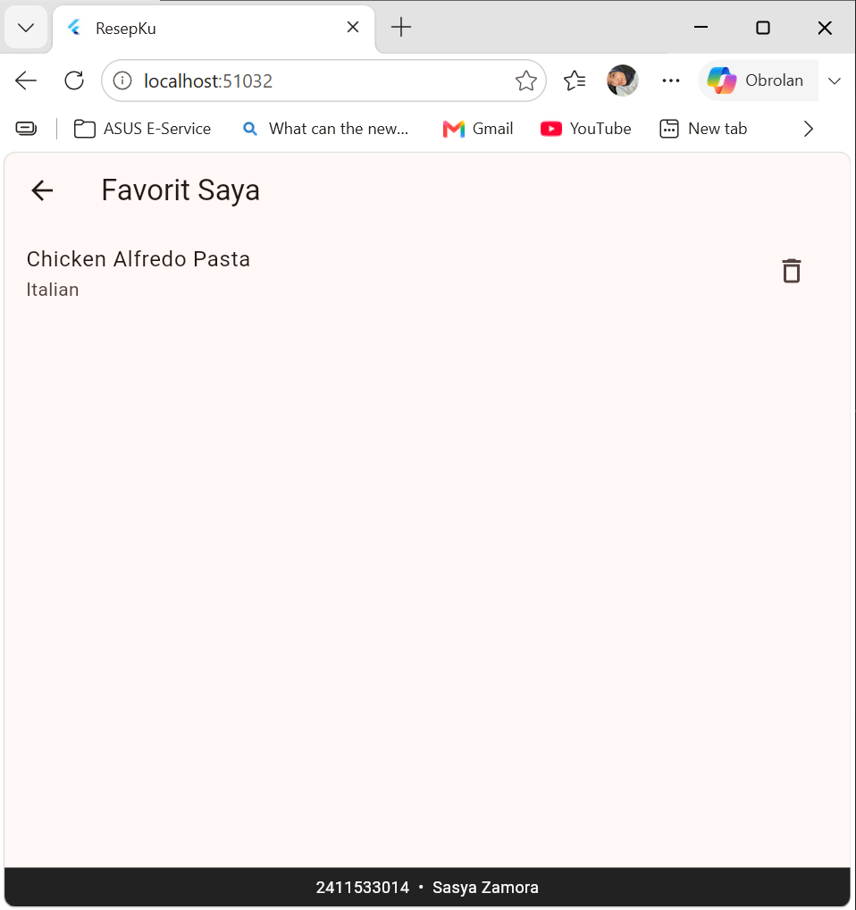
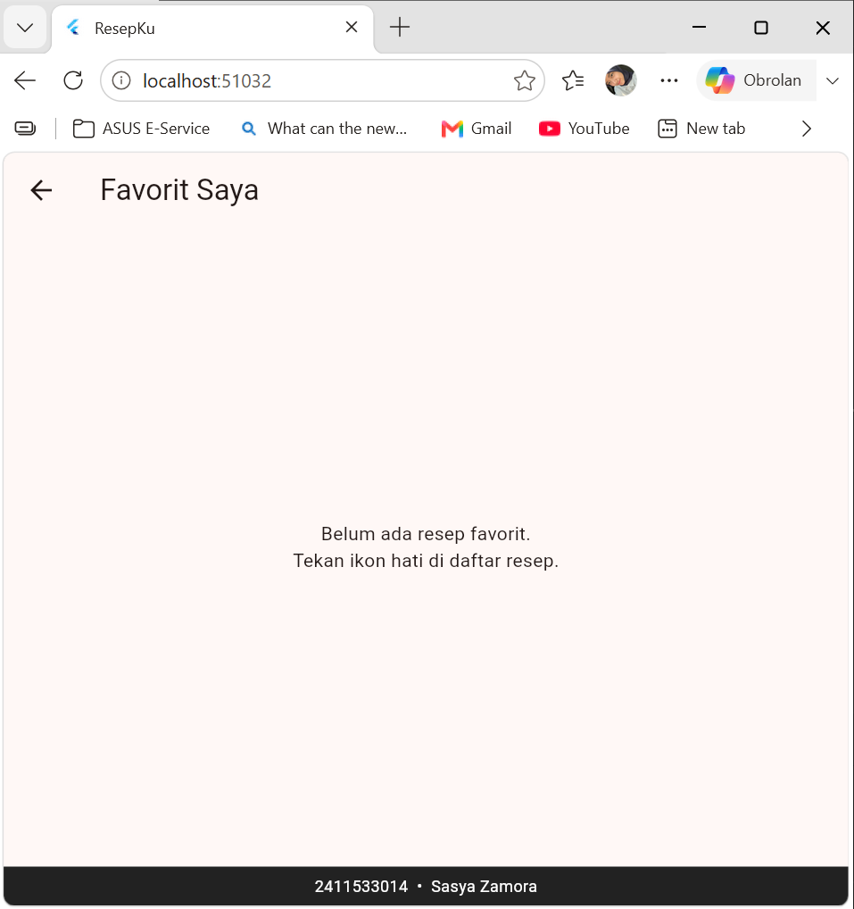
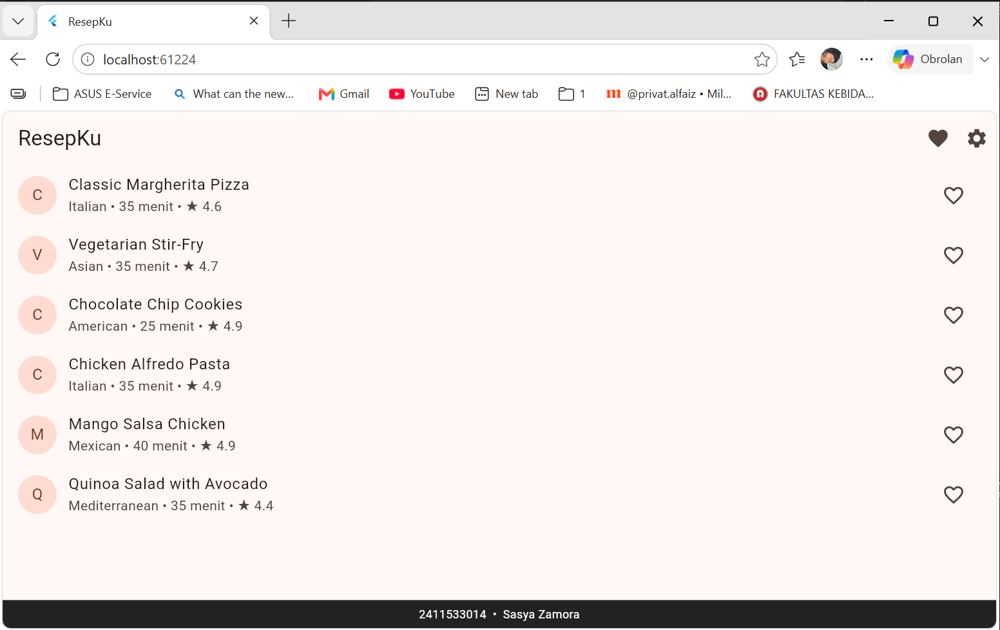
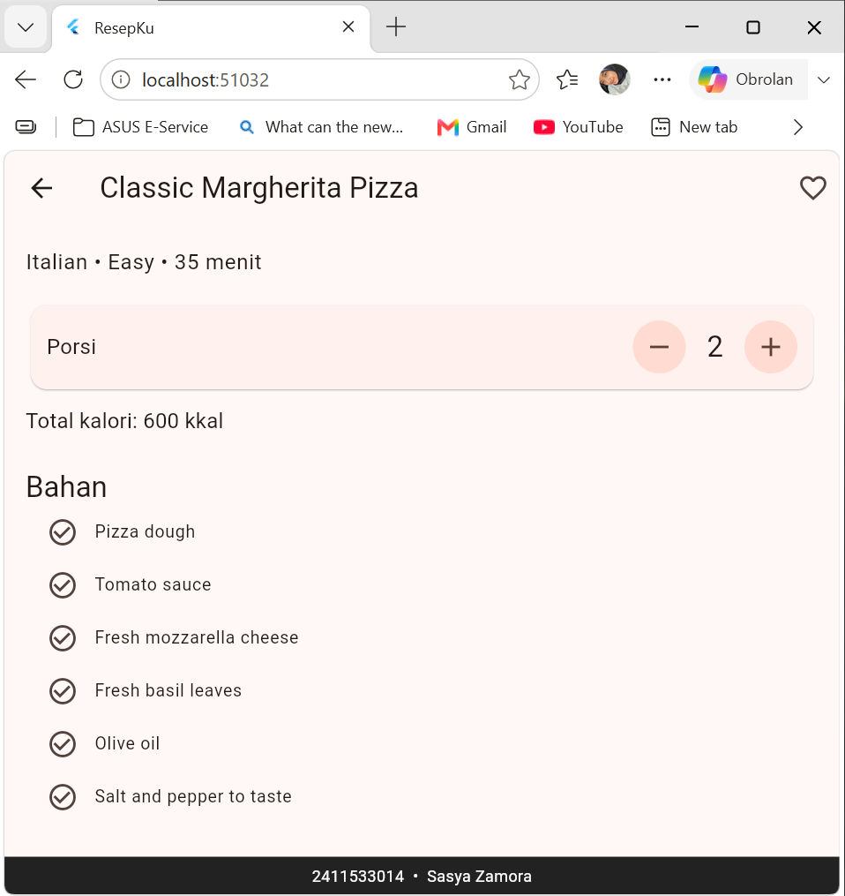
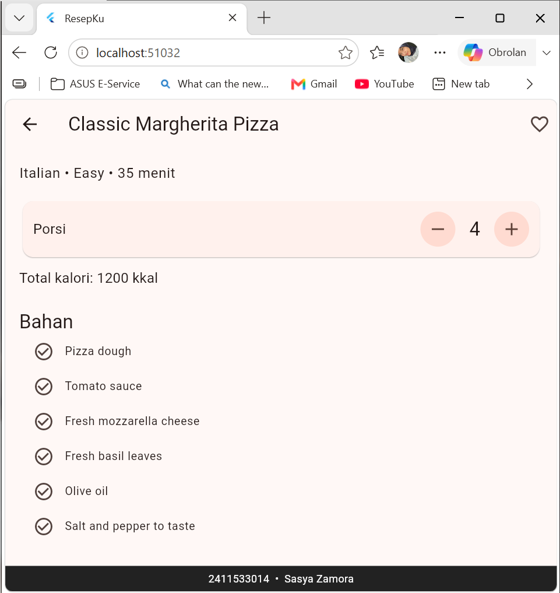
Keenam skenario berjalan sesuai harapan.
Ikon hati berubah karena _isFavorite adalah state lokal di tile yang di-tap, dan
setState() membuat tile itu dibangun ulang. Namun jumlah favorit tidak bisa
ditampilkan di AppBar HomePage, karena _isFavorite berada di dalam
class _RecipeTileState milik masing-masing tile dan HomePage tidak
bisa membaca state milik widget anaknya. Halaman detail juga tidak bisa mengetahui status
favorit, karena ia hanya menerima objek Recipe lewat constructor dan status
favorit tidak ikut terkirim. Jadi state lokal tidak cukup ketika satu data dibutuhkan banyak
widget dan halaman.
Jumlah porsi hanya dibutuhkan oleh satu halaman, yaitu halaman detail, dan tidak ada widget
lain yang perlu membacanya. Karena itu state lokal dengan setState() sudah cukup
dan lebih sederhana. Hal ini terbukti pada skenario 6: ketika porsi diubah menjadi 2 lalu
halaman ditutup dan dibuka lagi, porsi kembali ke nilai awal karena objek State
ikut dibuang bersama halamannya. Perilaku ini memang yang diinginkan, sebab porsi hanya
preferensi sementara saat melihat resep. Kalau porsi dimasukkan ke Provider, nilainya akan
tetap tersimpan di memori selama aplikasi hidup dan harus dikelola per resep, padahal tidak
perlu.
Ketika halaman Favorit dibuka, aplikasi mengalami error ProviderNotFoundException
(tidak menemukan Provider<FavoriteProvider> di atas widget
Consumer<FavoriteProvider>). Penyebabnya ada pada posisi provider di widget
tree. Provider hanya bisa dibaca oleh widget yang berada di bawahnya di dalam tree. Saat
dipasang di dalam HomePage, provider hanya mencakup subtree HomePage.
Padahal Navigator.push menambahkan route baru (FavoritePage) sebagai
anak Navigator yang berada di bawah MaterialApp, sejajar dengan route
HomePage, bukan di bawahnya. Akibatnya FavoritePage berada di luar
jangkauan provider. Hal yang sama juga terjadi pada halaman detail, karena ia memanggil
context.watch<FavoriteProvider>(). Itulah alasan provider dipasang di atas
MaterialApp supaya semua route bisa mengaksesnya. Setelah percobaan, kode saya
kembalikan seperti semula.
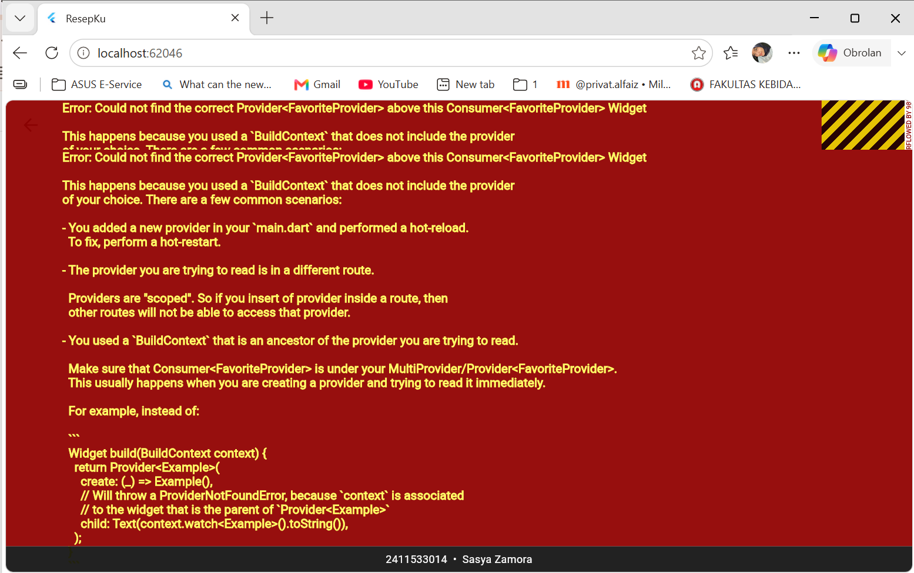
Pada latihan ini ditambahkan halaman Pengaturan berisi SwitchListTile
"Mode gelap" yang mengubah tema seluruh aplikasi. Langkah-langkahnya sebagai berikut.
Dibuat class ThemeProvider extends ChangeNotifier dengan field _themeMode (awalnya
ThemeMode.light), getter themeMode, getter isDark, dan method
setDark(bool value) yang mengubah mode lalu memanggil notifyListeners().
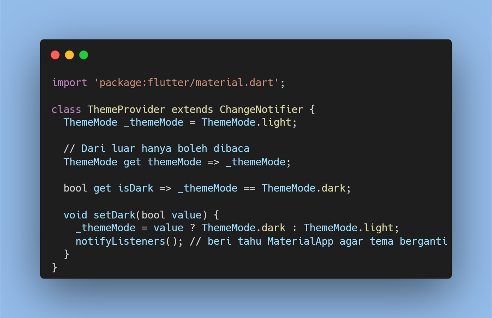
ThemeProvider ditambahkan ke daftar providers di dalam MultiProvider,
di samping FavoriteProvider. Pada MaterialApp ditambahkan darkTheme
(ThemeData dengan brightness: Brightness.dark) dan themeMode yang dibaca
dari ThemeProvider. Untuk membacanya dipakai context.watch, bukan read,
karena nilainya dibaca di dalam build() dan MaterialApp harus rebuild ketika
themeMode berubah. Kalau memakai read, tema tidak akan berganti. Baris
builder untuk footer identitas tidak dihapus.
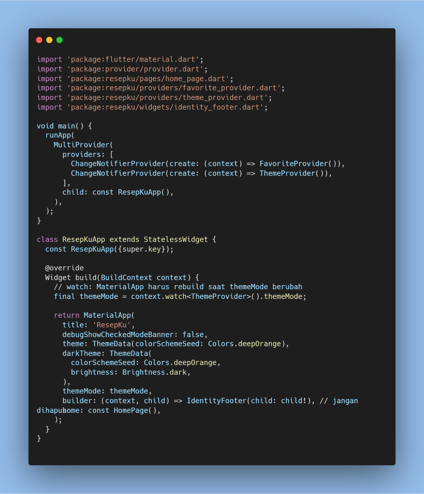
Halaman Pengaturan berisi SwitchListTile "Mode gelap". Nilai switch dibaca dengan
context.watch<ThemeProvider>(), dan saat onChanged dipanggil dipakai
context.read<ThemeProvider>().setDark(value) karena di dalam callback cukup memanggil
method.
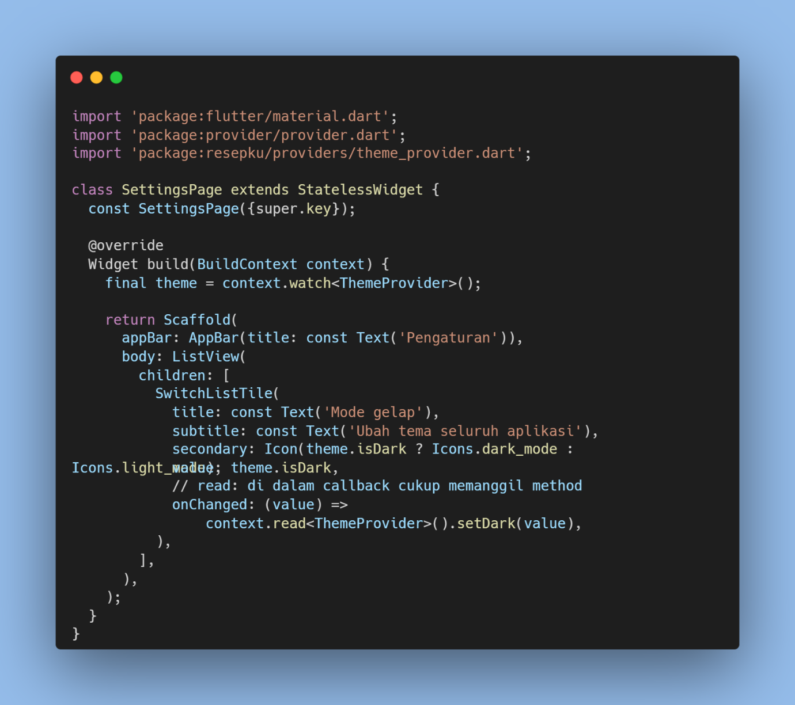
Di home_page.dart, actions AppBar ditambah IconButton ikon pengaturan
yang membuka SettingsPage lewat Navigator.push.
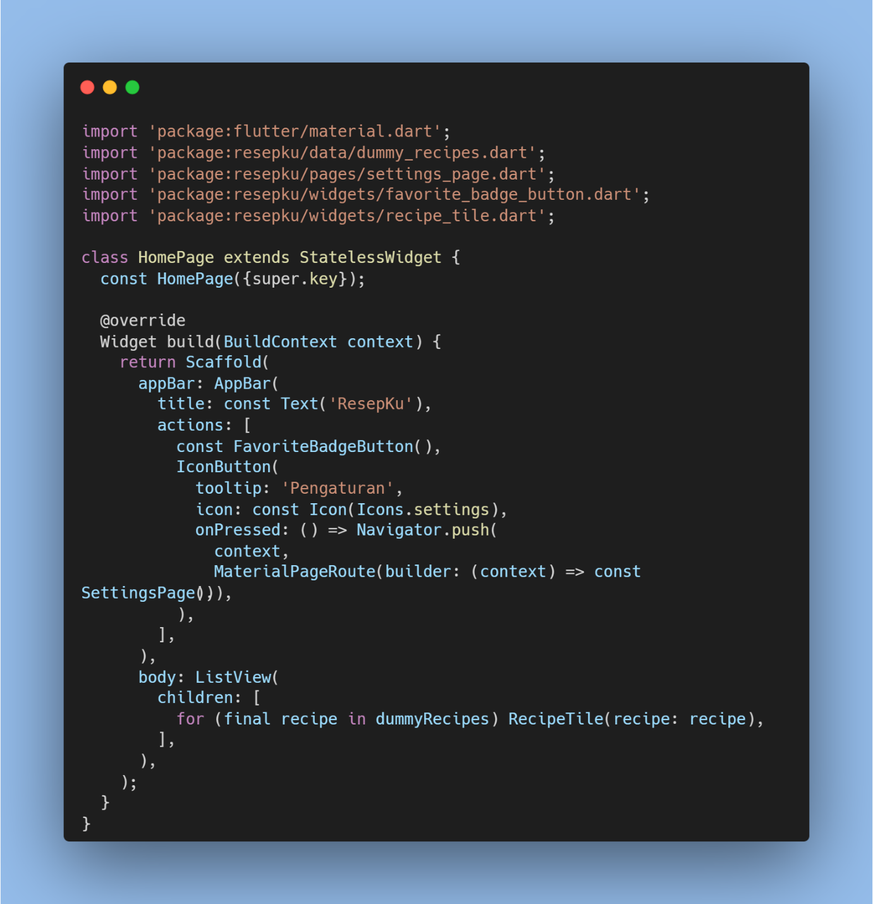
Hasil. Setelah hot restart, saat switch "Mode gelap" diaktifkan seluruh aplikasi berubah ke tema gelap, termasuk halaman Home dan halaman lainnya, dan footer identitas tetap tampil.
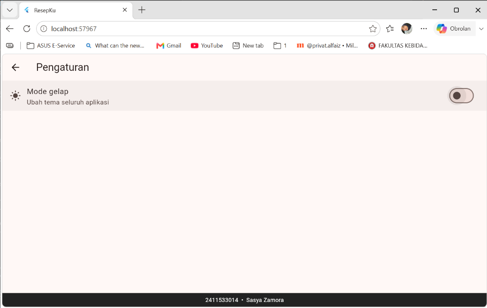
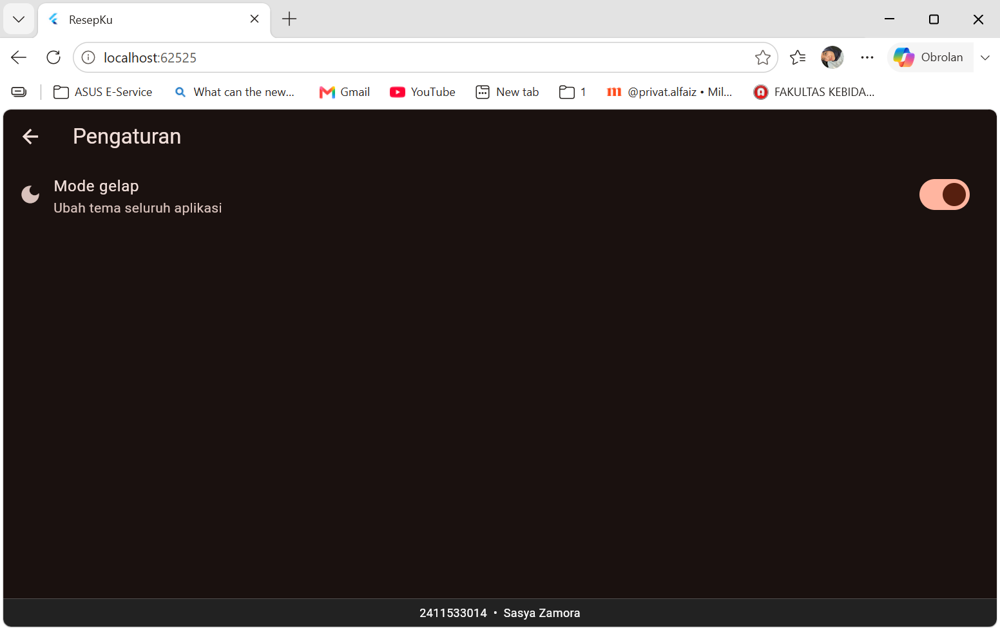
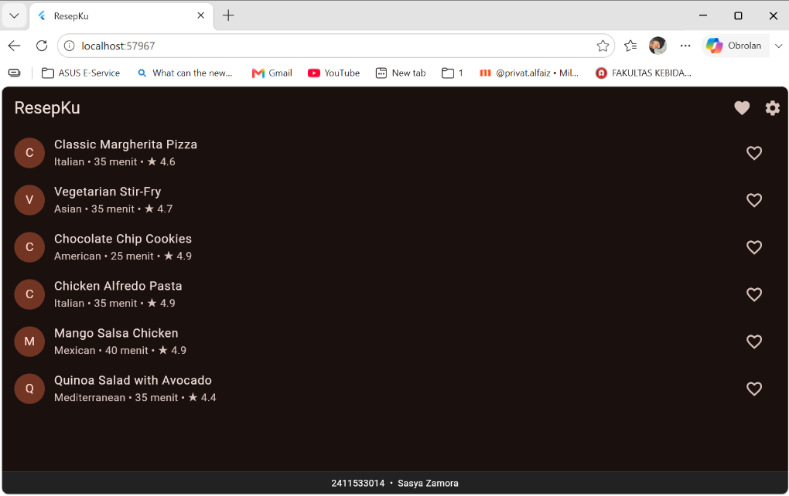
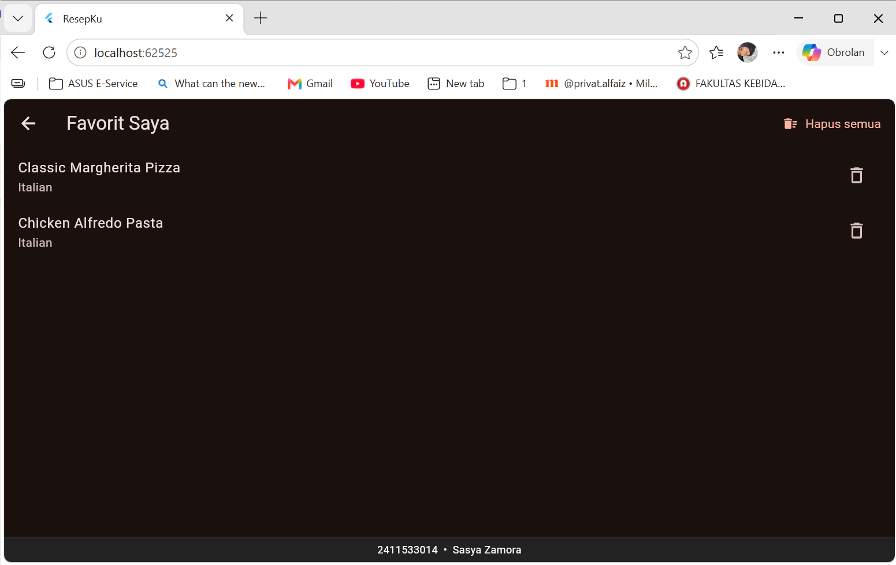
Di AppBar halaman Favorit ditambahkan tombol "Hapus semua" yang memanggil
clear() milik FavoriteProvider setelah pengguna mengonfirmasi lewat
AlertDialog. Perubahannya hanya di lib/pages/favorite_page.dart,
karena method clear() sudah ada di FavoriteProvider. Konfirmasi dibuat
dengan showDialog yang mengembalikan nilai true atau
false: clear() baru dipanggil kalau hasilnya true
(pengguna menekan "Hapus"), dan ada pengecekan context.mounted sebelum memakai
context setelah proses async. Tombol dibungkus
Consumer<FavoriteProvider> supaya ikut rebuild, dan onPressed
diisi null ketika favorite.count == 0 sehingga tombol otomatis
nonaktif saat daftar kosong.
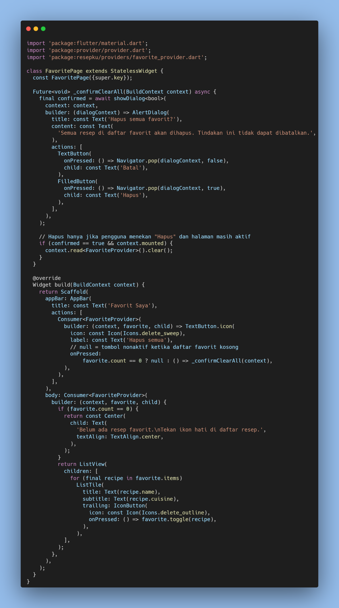
Hasil pengujian.
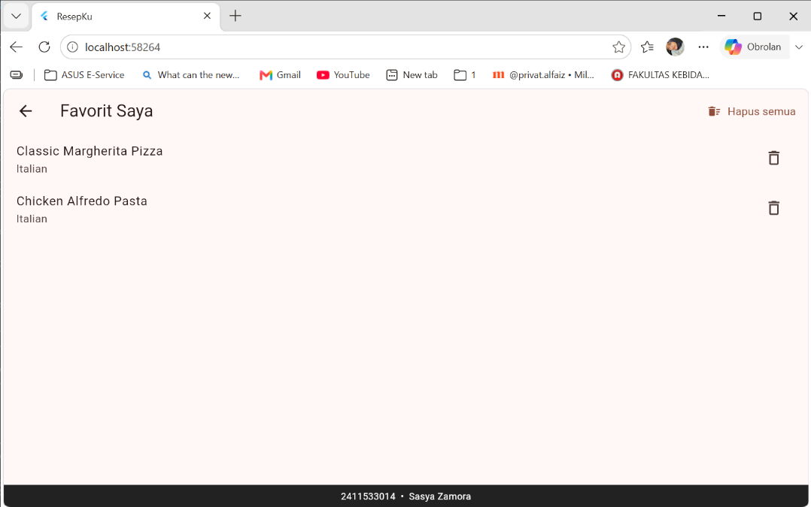
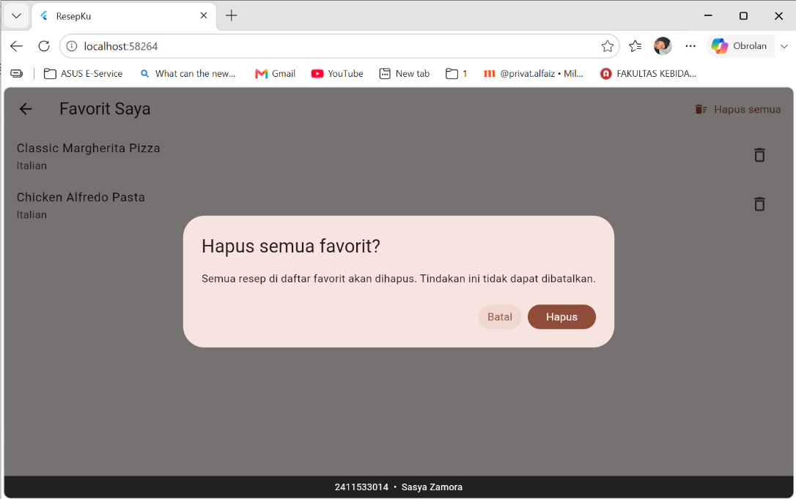
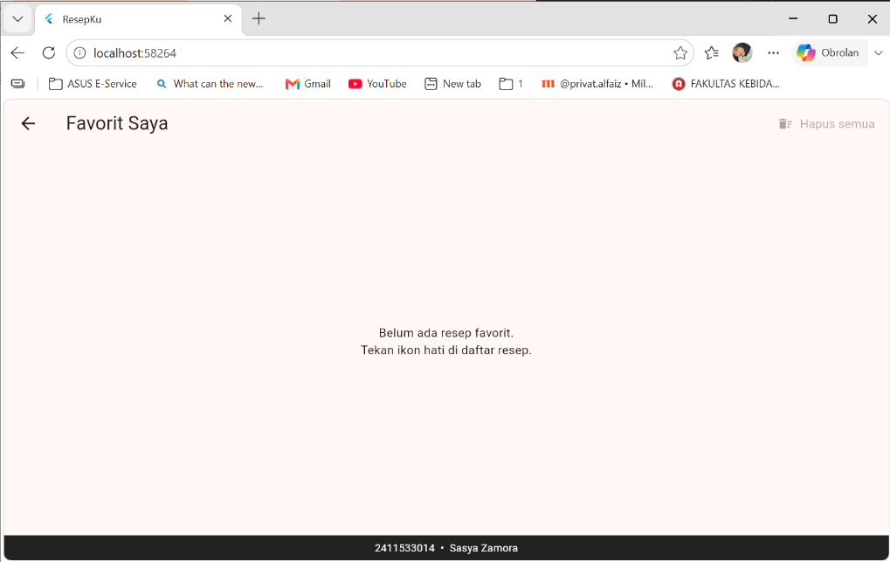
Dari praktikum ini saya menyimpulkan bahwa pemilihan tempat menyimpan state bergantung
pada siapa saja yang membutuhkan data tersebut. Jumlah porsi hanya dibutuhkan satu
halaman, jadi cukup disimpan sebagai state lokal dengan StatefulWidget dan
setState(). Sebaliknya, daftar favorit dibutuhkan oleh daftar resep, badge,
halaman detail, dan halaman Favorit, sehingga harus disimpan sebagai state global dengan
Provider yang dipasang di atas MaterialApp. Eksperimen di Bagian B
menunjukkan bahwa state lokal tidak bisa dibaca widget lain, dan percobaan memindahkan
provider ke HomePage menunjukkan bahwa posisi provider di widget tree
menentukan halaman mana saja yang bisa mengaksesnya.
Selain itu, saya jadi memahami perbedaan context.watch yang dipakai di dalam
build() supaya widget ikut rebuild, context.read yang dipakai di
dalam callback hanya untuk memanggil method, dan Consumer sebagai bentuk
widget dari watch. Pada Latihan 1, Provider juga bisa dipakai untuk state
aplikasi lain seperti tema, dan pada Latihan 2 saya berlatih menggabungkan Provider dengan
AlertDialog dan kondisi tombol nonaktif. Dengan begitu pertanyaan di awal
modul terjawab langsung lewat aplikasi ResepKu yang berjalan.